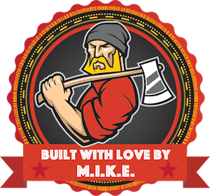

Introducing the MIKE stack
A man of the people, Mike also has a soft side.
Built with:
MongoDB - for a no-sql database
io.js - for the server-side, a fork of Node (or you can simply use Node)
Kendo UI - for the front end widgets and client-side routing
Express - for the web tier and managing the server-side API construction and routing
Fork this project on Github and start building! You can use the sample-app code as a starter seed project.
Learn more about the Mike Stack here